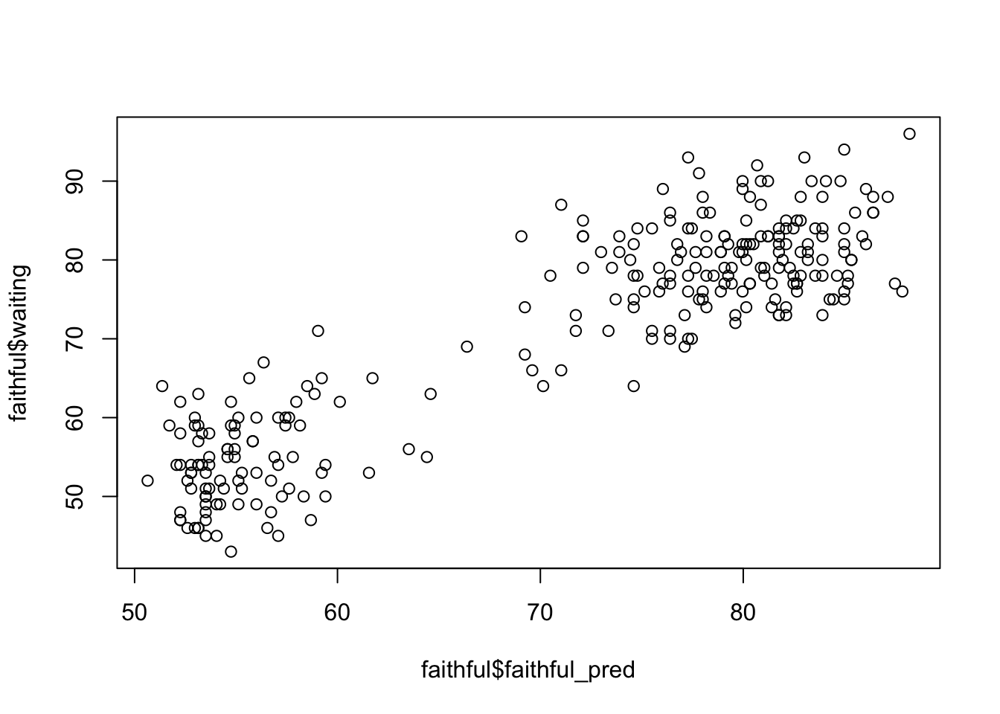
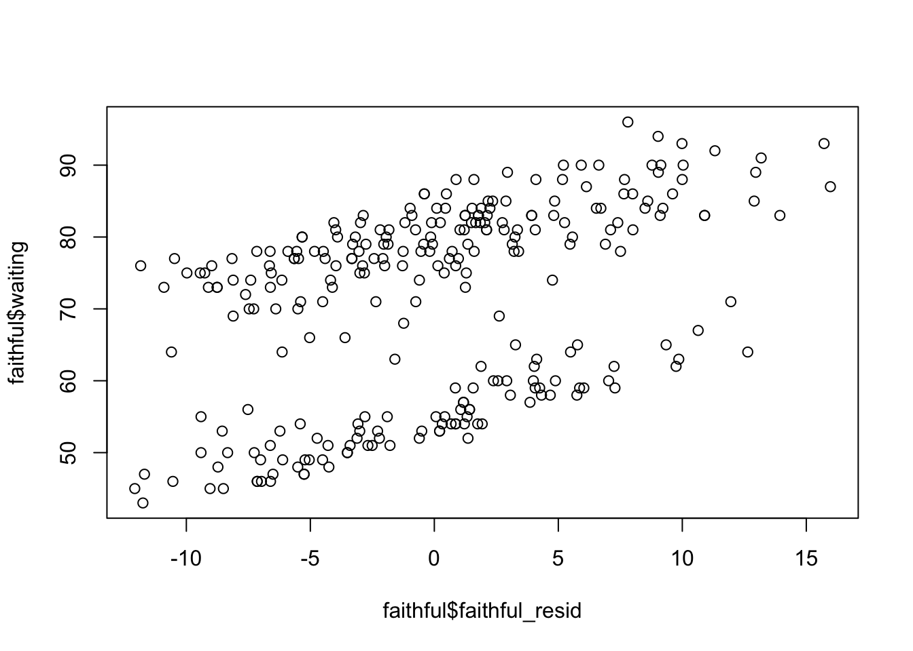

cor(faithful$eruptions, faithful$waiting)[1] 0.9008112Michael Woller
In this lesson we will cover simple linear regression by predicting one continuous outcome from one continuous predictor. We will start with correlations, then move into fitting and interpreting regression models, extracting model information, and plotting results using both ggformula and base R. Note, this lesson assumes you have a basic understanding of R, though I will touch on some of R as we go. The interactable shiny app for this lesson has intro to R material in it, if you wish to review.
We will be using the built-in faithful dataset, which contains data on eruptions of the Old Faithful geyser in Yellowstone National Park. The dataset consists of two columns:
eruptions - the length of an Old Faithful eruption (in minutes)waiting - the length between Old Faithful eruptions (in minutes)cor()Before fitting a regression model, it is often useful to look at the correlation between the predictor and the outcome. You can use the cor() function in R to find a correlation between two variables.
This computes the Pearson correlation between eruptions and waiting. For those who are new to R, the $ operator lets you select specific variables from a dataset.
[1] 3.600 1.800 3.333 2.283 4.533 2.883 4.700 3.600 1.950 4.350 1.833 3.917
[13] 4.200 1.750 4.700 2.167 1.750 4.800 1.600 4.250 1.800 1.750 3.450 3.067
[25] 4.533 3.600 1.967 4.083 3.850 4.433 4.300 4.467 3.367 4.033 3.833 2.017
[37] 1.867 4.833 1.833 4.783 4.350 1.883 4.567 1.750 4.533 3.317 3.833 2.100
[49] 4.633 2.000 4.800 4.716 1.833 4.833 1.733 4.883 3.717 1.667 4.567 4.317
[61] 2.233 4.500 1.750 4.800 1.817 4.400 4.167 4.700 2.067 4.700 4.033 1.967
[73] 4.500 4.000 1.983 5.067 2.017 4.567 3.883 3.600 4.133 4.333 4.100 2.633
[85] 4.067 4.933 3.950 4.517 2.167 4.000 2.200 4.333 1.867 4.817 1.833 4.300
[97] 4.667 3.750 1.867 4.900 2.483 4.367 2.100 4.500 4.050 1.867 4.700 1.783
[109] 4.850 3.683 4.733 2.300 4.900 4.417 1.700 4.633 2.317 4.600 1.817 4.417
[121] 2.617 4.067 4.250 1.967 4.600 3.767 1.917 4.500 2.267 4.650 1.867 4.167
[133] 2.800 4.333 1.833 4.383 1.883 4.933 2.033 3.733 4.233 2.233 4.533 4.817
[145] 4.333 1.983 4.633 2.017 5.100 1.800 5.033 4.000 2.400 4.600 3.567 4.000
[157] 4.500 4.083 1.800 3.967 2.200 4.150 2.000 3.833 3.500 4.583 2.367 5.000
[169] 1.933 4.617 1.917 2.083 4.583 3.333 4.167 4.333 4.500 2.417 4.000 4.167
[181] 1.883 4.583 4.250 3.767 2.033 4.433 4.083 1.833 4.417 2.183 4.800 1.833
[193] 4.800 4.100 3.966 4.233 3.500 4.366 2.250 4.667 2.100 4.350 4.133 1.867
[205] 4.600 1.783 4.367 3.850 1.933 4.500 2.383 4.700 1.867 3.833 3.417 4.233
[217] 2.400 4.800 2.000 4.150 1.867 4.267 1.750 4.483 4.000 4.117 4.083 4.267
[229] 3.917 4.550 4.083 2.417 4.183 2.217 4.450 1.883 1.850 4.283 3.950 2.333
[241] 4.150 2.350 4.933 2.900 4.583 3.833 2.083 4.367 2.133 4.350 2.200 4.450
[253] 3.567 4.500 4.150 3.817 3.917 4.450 2.000 4.283 4.767 4.533 1.850 4.250
[265] 1.983 2.250 4.750 4.117 2.150 4.417 1.817 4.467If your dataset contains missing values, cor() can fail unless you tell R how to handle them.
The option use = "complete.obs" tells R to use only cases that have non-missing values on both variables.
You can interpret this correlation value as a standardized difference. Old Faithful eruption length are highly correlated with its waiting time between eruptions with cor = .9. In reality, the correlation just tells how many standard deviations apart are two eruption lengths.
A full and proper definition would follow as: between two eruptions of Old Faithful that differ in one standard deviation of eruption length, we expect the longer eruption length to also have a .9 standard deviation increase in wait time for the next eruption.
A simple linear regression asks whether one variable (the predictor) helps us predict another variable (the outcome).
Here:
waitingeruptionsUse lm() to fit a linear model (“lm” stands for “linear model”). The following code does a linear regression predicting wait time from eruptions.
The ~ can be viewed as an = sign for the purpose of regression. The formula waiting ~ eruptions means: predict waiting from eruptions.
The faithful_model object contains much information about the regression. However, to extract the information, you need to do different things. Simply entering the model will only give you the coefficients (intercept and slope).
Call:
lm(formula = waiting ~ eruptions, data = faithful)
Coefficients:
(Intercept) eruptions
33.47 10.73 Typically, people use the summary() function to get a display of the majority of relevant model output.
Call:
lm(formula = waiting ~ eruptions, data = faithful)
Residuals:
Min 1Q Median 3Q Max
-12.0796 -4.4831 0.2122 3.9246 15.9719
Coefficients:
Estimate Std. Error t value Pr(>|t|)
(Intercept) 33.4744 1.1549 28.98 <2e-16 ***
eruptions 10.7296 0.3148 34.09 <2e-16 ***
---
Signif. codes: 0 '***' 0.001 '**' 0.01 '*' 0.05 '.' 0.1 ' ' 1
Residual standard error: 5.914 on 270 degrees of freedom
Multiple R-squared: 0.8115, Adjusted R-squared: 0.8108
F-statistic: 1162 on 1 and 270 DF, p-value: < 2.2e-16The summary() output gives useful model information, including:
For ease, significance coding (for a criteria of .05) is given in * asterisks. At the top of the output, you can also see the general range of residual values. At the bottom, you can see other model fit statistics:
If you want confidence intervals, you need to use the confint() function.
Recall that interpretations need to discuss differences between two points, need to mention expected/predicted outcome values, and need to mention directionality (which is the direction of the relationship—positive or negative). Avoid within-subject causal language like “change” or “increase” because a regression model is comparing two separate data points, not changing the same point of data.
Intercept:
For an Old Faithful eruption that lasted 0 minutes, the wait time is expected to be 33.47 minutes. Obviously this doesn’t make sense given the context.
Slope:
For two different Old Faithful eruptions that differ in their length by one minute, there is expected to be a 10.73 minute longer wait time for the longer eruption.
This is a rather finicky definition, but it is technically correct. Most people interpret regression coefficients improperly with “change” type language, which implies that we are taking an individual point and maneuvering it, but this isn’t true. We are simply looking at average differences between two independent eruptions. This technicality is almost universally ignored, to the point that, practically, no one cares. But if you want to do proper psychological research you need to be aware that you are not making causal judgement here! That is a whole unique domain within psychological statistics.
When you fit a model in R, the result is stored as an lm object. To check you can use class(), which tells you the class of any R object.
lm objects contain many pieces of information about whichever regression model they represent. The attributes() function gives a list of everything within an object.
$names
[1] "coefficients" "residuals" "effects" "rank"
[5] "fitted.values" "assign" "qr" "df.residual"
[9] "xlevels" "call" "terms" "model"
$class
[1] "lm"Here, under $names (names being a placeholder), we can see everything that R has automatically calculated. Some especially important pieces are the following (note, I am putting each into the head() function to keep the output to only give me the first 10 of the outputs as opposed to hundreds of points):
(Intercept) eruptions
33.47440 10.72964 1 2 3 4 5 6
6.898894 1.212248 4.763708 4.029832 2.888139 -9.407953 1 2 3 4 5 6
72.10111 52.78775 69.23629 57.97017 82.11186 64.40795 coefficients: the estimated intercept and sloperesiduals: the difference between observed and predicted scoresfitted.values: the predicted Y values from the regression lineRecall that a predicted score is the model’s estimated value of Y for each case. A residual is the difference between the observed Y value and the predicted Y value. In other words: residual = observed score - predicted score. If the residual is large, the model predicted that case poorly. If the residual is small, the model predicted that case well.
Since these two values are so universally used, there is actually shorthand for them:
There are also built-in functions that extract the same information.
(Intercept) eruptions
33.47440 10.72964 1 2 3 4 5 6
6.898894 1.212248 4.763708 4.029832 2.888139 -9.407953 1 2 3 4 5 6
72.10111 52.78775 69.23629 57.97017 82.11186 64.40795 These functions are often preferred because they work across many different model objects, not just lm() models.
One way to save new variables into the dataset is with transform(). This function mutates your inputted dataset with whatever new variables you specify.
This adds two new variables to the faithful dataset: faithful_resid = residual scores and faithful_pred = predicted scores. You can choose different variable names if you want.
$ OperatorAnother way to save new variables is with the $ operator. This method is very useful since it is quick. You can do this with any variable so long as its length matches the number of rows in the dataset.
This does the same thing as transform(), but on separate lines. The general pattern is: dataset$new_variable <- values.
Graphs are extremely useful in regression because they help us see the relationship between X and Y directly. We will focus on basic scatterplots. There are many methods of plotting. We will mainly be using the ggformula package, but we will also show the default R function.
A scatterplot shows the relationship between two quantitative variables. Here, X-axis = eruptions and Y-axis = waiting. Each point represents one observation in the dataset.
For plotting regression lines: the regression line shows the predicted value of waiting for each value of eruptions. In other words, the line is the model’s best-fitting straight line through the data.
For residual plots: residuals tell us how far each observed score is from the model’s predicted score. For a well-behaved linear regression model, we generally want residuals to be scattered around 0 without a strong pattern. If the residuals show a curve, funnel shape, or clustering pattern, that can suggest problems with model assumptions.
gf_point() for Raw DataThe gf_point() function from the ggformula package gives a large variety of options for visualization. The benefit of this function is that you can conveniently specify your model within the function instead of plugging in variables manually. Though there are almost an uncountable ammount of methods you can do plotting in R.
gf_lm() to Fit a LineIn ggformula, you can add the fitted regression line with gf_lm(). You have to first add a piping operator from the dplyr package at the end of the gf_point() function.
This line matches the predicted scores from the regression.
gf_point() for Predicted ScoresSince gf_point() works on a selected dataset, you need your dataset to have the predicted scores saved within it.
gf_point()() for ResidualsSame stipulations for the predicted scores using gf_point() matter here.
plot() for Raw DataBase R has the plot() function that can give basic scatterplots. I mainly use plot() for very quick visualizations to just get the idea of what data looks like. There are two methods. Manually specifying the variables using the $ operator:
You could also do this using the with() function, where you basically say do plot() with faithful. Whichever method is up to you.
If you want to add a fitted line with plot(), use abline() with your model object in the next line. This will add the line on top of the previously generated plot.
plot()There is nothing special about this. Just take wherever you saved the predicted scores and residuals and put them in plot().


You have completed the Simple Linear Regression tutorial. Here is a summary of what was covered:
cor() and handling missing values with use = "complete.obs"lm() and reading the summary() output$ notation and functions like coef(), resid(), and predict()transform() and the $ operatorggformula and base RThe next lesson covers multiple linear regression.